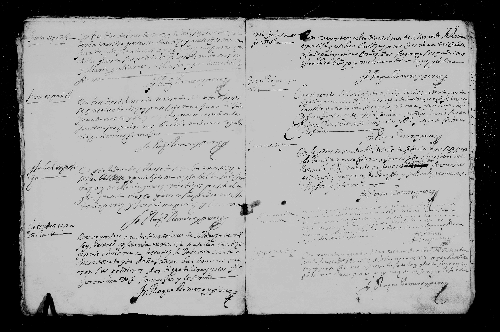

Gertrudis Maldonado Caldovinos

| Tipo | Partida de bautismo |
| Fecha | 24 de marzo de 1670 |
| Lugar | San José (Cd. Hidalgo), Michoacán |
| Libro / página | San José, registros de matrimonio 1646–1683; pág. 75 (la imagen guardada parece ser del rollo de matrimonios: confirmar la página en la imagen, duda) |
| Bautizada | Getrudis Maldonado Caldovinos |
| Padres | Mateo Maldonado y Doña Juana Caldovinos (según el índice) |
Transcripción pendiente de verificación: los datos provienen del índice del registro; el manuscrito no ha sido releído línea por línea. Todo texto manuscrito no verificado se marca «ilegible/duda».